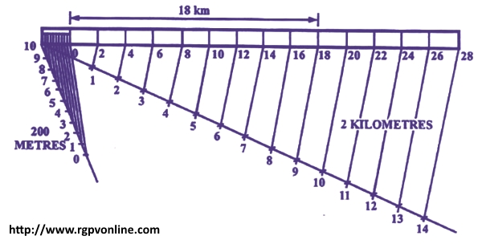

Que. 12 : In a map, a distance of 2 km is shown as 1 cm in the drawing. Draw a plain scale to read 30 kilometers and mark a distance of 18 km in the scale.
2 कि.मी. की वास्तविक दूरी किसी मानचित्र में 1 सेमी प्रदर्शित की गई है। 30 किलोमीटर पढ़ने के लिए एक स्वच्छ मापनी की रचना करें व 18 km की दूरी नापकर दिखाइए।
Answer : . Given, 1 cm = 2 km
RF=Drawing size / Actual size
= 1 cm / 2 km
= 1 / ( 2 × 1000 × 100 )
∴ Length of scale = R.F. × Maximum length to be measured
= ( 1 × 30 km ) / ( 2 × 1000 × 100 )
= ( 1 × 30 × 1000 ) / ( 2 × 1000 × 100 ) cm
= 15 cm
The scale as shown in figure can be drawn in following steps –
(i) Draw a horizontal line of length 15 cm. Take width of scale as 5 mm (in general).
(ii) Divide the line into 15 equal divisions each representing 2 km.
(iii) Mark 0 (zero), at the end of the first division. Mark 1, 2, 3 ..... etc. at the end of the subsequent divisions towards right.
(iv) Mark a distance of 18 km on this scale.
